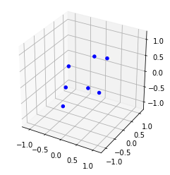
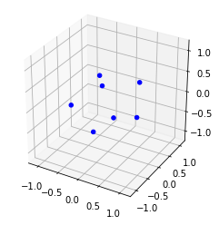

lj7 = System(7)
lj7.optimise()Cluster Optimisation
Optimise points in 3d space based on a potential
CoM
CoM (*vectors)
returns the CoM of vectors
CoMTransform
CoMTransform (*vectors)
Transforms vectors so the CoM is at the origin
InertiaTensor
InertiaTensor (*vectors)
returns the inertia tensor of 3D vectors
point_setup
point_setup (n:int, seed:int=0)
returns n points distributed on the unit sphere
geom_opt
geom_opt (points, F_calc, iterations=1000, factor=0.0001)
optimises geometry of points in 3D space using gradient descent
System
System (n:int=7, function:str='(4*((1/r)^12 -(1/r)^6))')
A cluster system, defined by n points and a pairwise potential in term of r, given as a string
| Type | Default | Details | |
|---|---|---|---|
| n | int | 7 | the number of atoms in the cluster |
| function | str | (4*((1/r)^12 -(1/r)^6)) | the pairwise potential between any two atoms in the cluster |
System.optimise
System.optimise (riter:int=10000, giter:int=1000, gfactor:int=0.0001, biter:int=100)
| Type | Default | Details | |
|---|---|---|---|
| riter | int | 10000 | the number of random initial configurations to consider |
| giter | int | 1000 | the number of gradient descent iterations to consider |
| gfactor | int | 0.0001 | the factor for the gradient descent |
| biter | int | 100 | the number of basin hopping iterations to perform |
Optimisation is done by random search, followed by gradient descent followed by using scipy’s basinhopping routine. For the Lennard Jones potential, the results have been checked against the Cambridge Cluster Database and are accurate for 6 decimal places up to \(n=10\)
print(lj7)Energy -16.505384, for 7 pointslj7.plot()
For the morse potential in the reduced form \[\exp(\rho_{0} (1-r))(\exp(\rho_{0} (1-r))-2)\] as given on the Cambridge Cluster Database, the results for \(\rho_{0} = (3,6,10,14)\) have been checked against the results on http://doye.chem.ox.ac.uk/jon/structures/Morse/tables.html and are accurate for 7 atoms to 6 dps. For 5 atoms, the results are identical for \(\rho_{0} = (6,10,14)\) but for \(\rho_{0} = 3\), smaller by 0.000001: likely a rounding error.
m7 = System(7, '(exp(3*(1-r)))*(exp(3*(1-r))-2)')
m7.optimise()print(m7)Energy -17.552961, for 7 pointsm7.plot()
For 6 points, the value cannot be calculated directly for all but \(\rho = 3\). However, using this geometry as start point, all values can be calculated to within 0.000001.
m6 = System(6, '(exp(3*(1-r)))*(exp(3*(1-r))-2)')
m6.optimise()
print(m6, 'rho = 3')
m6.function = '(exp(6*(1-r)))*(exp(6*(1-r))-2)' # leave the points as previously optimised but change the pairwise potential
m6.optimise(riter=0) # do not do any random optimisation steps
print(m6, 'rho = 6')
m6.function = '(exp(10*(1-r)))*(exp(10*(1-r))-2)' # leave the points as previously optimised but change the pairwise potential
m6.optimise(riter=0) # do not do any random optimisation steps
print(m6, 'rho = 10')
m6.function = '(exp(14*(1-r)))*(exp(14*(1-r))-2)' # leave the points as previously optimised but change the pairwise potential
m6.optimise(riter=0) # do not do any random optimisation steps
print(m6, 'rho = 14')Energy -13.544229, for 6 points rho = 3
Energy -12.487809, for 6 points rho = 6
Energy -12.094943, for 6 points rho = 10
Energy -12.018170, for 6 points rho = 14System.xyz
System.xyz (name:str=None)
Returns the coordinates of the system in .xyz format
| Type | Default | Details | |
|---|---|---|---|
| name | str | None | name of file to save to: if None prints |
The final configuration can be output in .xyz format
lj7.xyz()7
Energy -16.505384, for 7 points, calculated by ChemII tools
He 0.3849546544 -0.1048571302 0.8689910322
He -0.2296806096 0.6400449466 -0.6722498078
He -0.5186360529 0.0632089849 0.2373778855
He 0.5186360103 -0.0632089496 -0.2373778974
He 0.2512385919 0.8659521341 0.3183340784
He -0.3931890427 -0.4703826180 -0.7338072527
He -0.0133235514 -0.9307573678 0.2187319618